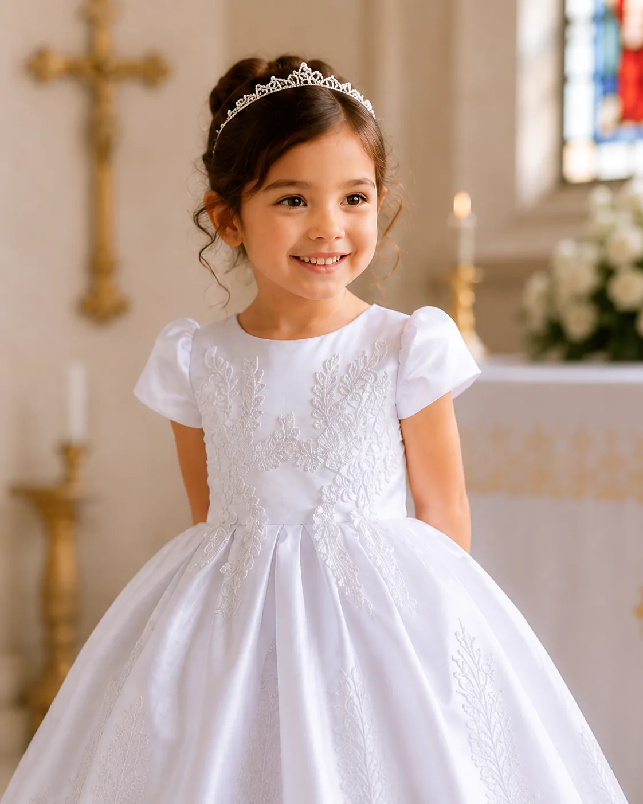
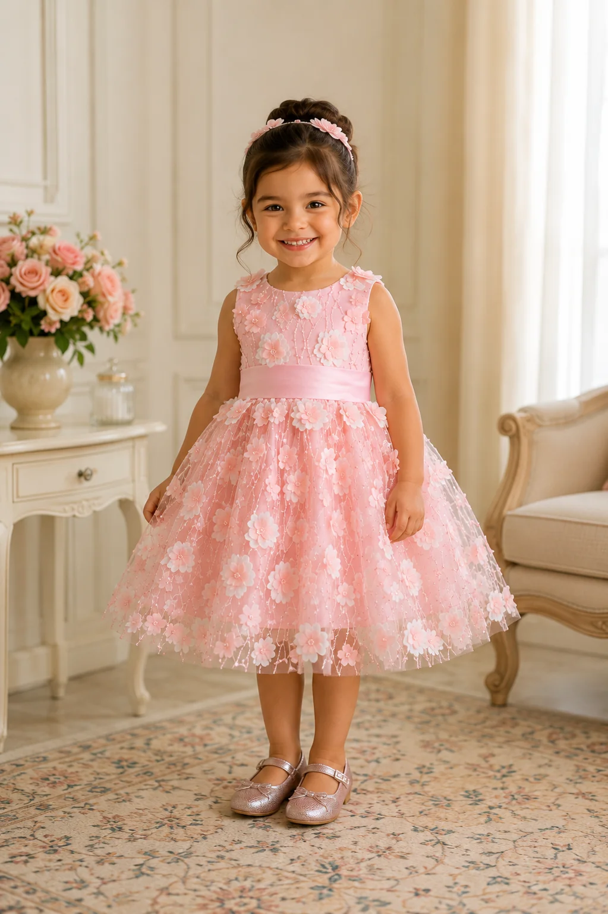

The Blossom Dress
Pink floral tulle and dreamy sheer sleeves.

The Pearl Dress
White satin with delicate floral embroidery.

The Wildflower Dress
Colorful floral embroidery and a statement bow.

The Stardust Dress
Champagne sequins and gold-star tulle.

The Petal Dress
Blush-pink 3D flowers and a statement satin bow.
Explore five whimsical designs. Contact us for current sizing, availability and wholesale details.